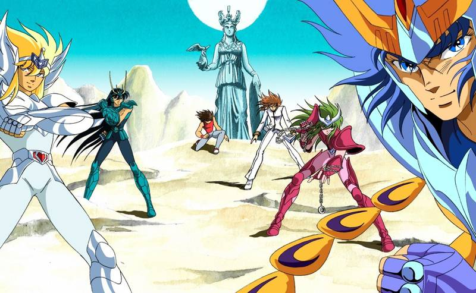
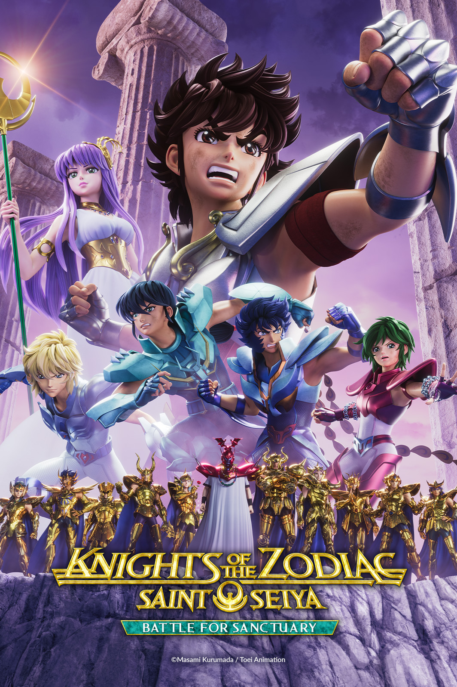
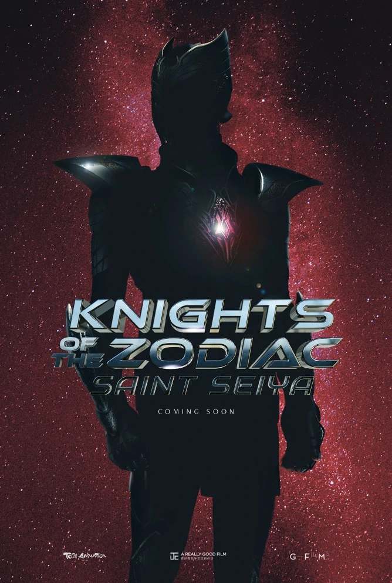

Saint Seiya wiki & shop
Personajes
Obras
Noticias
Ventas
Disabled
Noticias
La carta que Akira Toriyama le escribió a Masami Kurumada

El primer capitulo de preludio de pegaso

La adaptacion de Saint Seiya: Knights Of The Zodiac cambiara de plataforma para su segunda temporada.

Saint Seiya Live Action sera estrenada en 2023 y ya se save parte del reparto